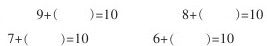
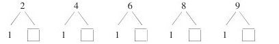
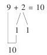
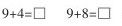

“9加几”教学设计 [1]
“凑十法”是20以内进位加法教学的难点。如何突破这一难点？根据小学生的认知规律，我们这样设计了“9加几”的教学过程：
一、复习
1.填空。

2.看卡片回答。

3.计算。
9+1+1=
9+1+6=
9+1+2=
9+1+8=
二、圈十练习
1.出示：
教师告诉学生圈内有10个小方块，然后问：不用数，你能说出图上一共有多少个方块吗？当学生说出是11个小方块时，接着问：你是怎么知道的？（怎么想的？）学生回答后，教师小结：有十几个方块，如果能先圈起10个，就能很快说出一共有多少个。
2.出示：
谁能在黑板上圈一下，让同学们一看就知道一共有多少个三角？（让一学生板演圈十，然后说出自己是怎么想的。）
3.让学生拿出学具，左边摆9根小棒，右边摆6根小棒。提问：怎样移动小棒，让别的同学能很快地说出是多少根小棒？（让一名同学在磁性黑板上摆，教师巡视看是否有摆错的，及时指正。）同座位同学互看。
三、进行新课
1.教学例1。
（1）教师投影装有9个花皮球的盒子图。请同学们数一数，盒子里一共有几格？（10格。）里面装着几个皮球？（9个。）还空着几格？（1格。）教师抽拉画有二个红皮球的投影片，问：盒子外面有几个皮球？（2个。）要求盒里盒外一共有多少皮球，用什么办法计算？（把两个数合并在一起，用加法计算。）怎样列算式？学生回答教师板书：9+2=。
（2）怎样一下子就能看出盒里盒外一共有多少个皮球呢？引导学生说出：把盒子里放满10个。要把盒子装满凑成10个，还差几个？你是怎么想的？教师抽拉灯片，引导学生说出差1个。因为还有一格空着，所以只需要添上1个皮球。这1个皮球从哪里拿？（从盒外两个皮球中分出1个放进盒子里。）为什么不把盒外的两个都放进去呢？（因为十个格子里已装了9个皮球，空着1格，放进1个正好装满，一共10个）。盒内10个加上盒外剩下的1个，一看就知道是11个皮球。
（3）那么怎样计算9+2等于几呢？引导学生说出：先把9凑成10，9和1凑成10，所以把2分成1和1，先算9+1=10，再算10+1=11。学生回答后教师板书“凑十”过程：

看9，想9加几组成10；分2，把2分成1和1；凑10，9加1凑成10；加几，10加1等于11。
让一名同学再重复叙述一遍思维过程。
2.教学例2：摆一摆，算一算。
（1）让同学们摆小棒，左边摆9根，右边摆3根。要求一共有多少根小棒，怎样列算式？学生口答，教师板书：9+3=。怎样移动一下小棒就能很清楚地看出一共有多少根小棒呢？（从右边拿1根放到左边。）为什么从3根中要分出1根放到左边去呢？怎样计算9+3呢？学生回答，教师板书。“想”：看第一个加数9，因为9和1凑成10，所以把3分成1和2。“算”：9加1得10，10加2得12。
（2）教学9+7。学生摆圆片，左边摆9个蓝圆片，右边摆7个红圆片，学生演示“思维线路图”并叙述。
（3）指导看书第80页例2，边说计算过程边填空。
3.教学例3。边摆边算：

。先让学生根据算式独立用学具摆一摆，再计算出结果。教师巡回指导。然后口答计算结果和想的过程。
4.教学例4。先让学生想一想解题思路——“看大数，分小数，先凑十，再加几”，然后计算 。
四、巩固练习（略）
五、课堂小结
这节课我们学习的是9加几的进位加法。9加几的算法可概括为：看大数，分小数，凑成十，加剩数。
[简评]
儿童的思维特点是从具体形象思维逐步向抽象逻辑思维过渡，其认知规律一般是“动作、感知、表象、概念”。该教学设计体现了这一规律，它充分利用了直观教具、实物演示，并通过学生亲自数一数、摆一摆、算一算等方法，力求使学生懂得算理、掌握规律，是一种较理想的设计方案。